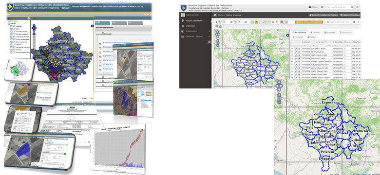

GIS and Software Development
Geo components, geo infrastructures and Web-GIS systems across commercial and open source platforms — from data acquisition to hosting and outsourcing.
- Data acquisition & digitisation
- Data conversion / integration
- GIS project management
- System integration (EAI)
- Web-GIS solutions
- Desktop · Mobile GIS · LBS
- Geo service servers
- Data storage / DBMS
